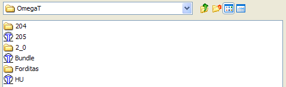
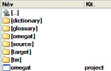

Az OmegaT állományai és könyvtárai
Az OmegaT háromféle állománnyal működik.
- A fordítási projekt állományai: ezek alkotják magát a fordítási projektet. Ezek elvesztése esetén sérül és végrehajthatatlanná válik a projekt. A projektállományok az OmegaT legfontosabb fájljai. Ezek azok az állományok, amelyeket a napi fordítási tevékenység során használ.
- Felhasználói állományok: ezek az OmegaT viselkedésének megváltoztatása közben jönnek létre, amikor a felhasználó a beállításokat módosítja. Ezek elvesztése esetén az OmegaT az "alapbeállításokat" fogja használni. Emiatt fordítás közepén némi gond támadhat.
- Az alkalmazás állományai: ezeket a letöltött csomag tartalmazza; többségükre az OmegaT megfelelő működéséhez van szükség. Ha valamilyen okból ezen állományok elvesznek, pótlásukhoz töltse le és/vagy telepítse újra az OmegaT-t.
A fordítási projekt állományai
Egy fordítási projekt az OmegaT esetén több állományt és könyvtárat foglal magában.
A fordítási projekt állományainak helye
Amikor létrehoz egy fordítási projektet, az OmegaT automatikusan létrehoz egy sor könyvtárat a későbbi állományok tárolásához, továbbá különféle állományokat, amelyek a projekt beállításainak megadására és a projekt fordítási memóriájának tárolására szolgálnak. Alaphelyzetben a fordítási projekt könyvtárai a fő projektkönyvtár alá kerülnek. A könyvtárak helyét megadhatja a projekt létrehozása közben, illetve a fordítás folyamán. Ily módon munkavégzésének és megszokásának megfelelően adhat meg már létező, vagy hozhat létre új könyvtárakat. Ha a könyvtárak helyét a projekt létrehozása után kívánja módosítani, nyissa meg a Projekt → Beállítások... menüpontot és hajtsa végre a szükséges változtatásokat.
A fordítási projekt állományainak felsorolása
Amikor a fordítási projektet egy OmegaT által megnyitott párbeszédablakban nézi, a fordítási projekt egy hozzá társított OmegaT-ikonnal jelenik meg. Ugyanakkor egy fájlkezelővel ugyanaz a fordítási projekt semmiben sem különbözik a többi könyvtártól.

Amikor egy OmegaT-ikonnal megjelölt elemet kiválaszt, megnyílik a hozzá tartozó projekt. Alaphelyzetben egy új alkönyvtárban létrejön egy Example_Project (Mintaprojekt) elnevezésű fordítási projekt, melynek felépítése a következő:

Kezdetben a projekt összes alkönyvtára üres.
Omegat
- Az omegat alkönyvtár a végén több állományt tartalmaz, a legfontosabb a project_save.tmx (...) fordítási memória. A project_save.tmx tartalmazza a projekt fordítási memóriájának munkapéldányát. Bekapcsolt automatikus mentés esetén frissítése kilépéskor automatikusan megtörténik. Ez az a fordítási memória, amellyel a lefordított állományokat létrehozza. A későbbiek során számos project_save.tmx.<dátum és idő>.bak (...) formátumú TMX-állomány jön létre ebben az alkönyvtárban. Ezek a projekt fordítási memóriájának biztonsági mentésére szolgálnak és a projekt egyes újbóli megnyitásakor jönnek létre, vagyis azt a tartalmat tükrözik, amely az adott munkafolyamat előtt volt érvényben.
- A stats.txt állomány (...) az adott projektre vonatkozó statisztikát tartalmazza, a szövegrészekre és szószámra vonatkozó információkat egy táblázatkezelőben tekintheti meg. A benne szereplő információ részletesebb, mint amilyen a Projektállományok ablakban látható. Az esetleg előálló ignored_words.txt és a learned_words.txt állományok az OmegaT későbbi változataiban használandó helyesírás-ellenőrző számára vannak fenntartva.
source (forrás)
- A source (forrás) alkönyvtárba kerülnek a fordítandó állományok. Megadhat egy új alkönyvtárat és állományokat adhat hozzá a projekt későbbi szakaszában, vagy használhatja a Projektállományok ablakban megjelenő menüpontot. A forrásszövegek alkönyvtárának kialakítása teljes mértékben Önre van bízva. Ha a lefordítandó állományok faszerkezetben vannak elrendezve, elegendő a legfelső alkönyvtárat megadnia, az OmegaT a faszerkezet megtartása mellett átmásolja az egészet.
target (cél)
- Ha nyitott projekt mellett kiválasztja a Projekt → Lefordított állományok létrehozása menüpontot, a /source/ alkönyvtár összes állománya - akár le vannak fordítva, akár nem - előáll a forráséval megegyező könyvtárszerkezetben, ily módon jelezve a teljes projekt lefordításának pillanatnyi állását. Gyakorlatilag az OmegaT egyesíti a /omegat/project_save.tmx állományban szereplő fordítási információkat a forrásszövegekkel és előállítja a /target/ alkönyvtár célnyelvi állományait.
tm
- Ebbe az alkönyvtárba helyezheti korábbi fordításainak fordítási memóriáit. Ezeknek tmx formátumúnak kell lenni. A más formátumú memóriákat az elérhető eszközökkel alakítsa át szabványos tmx formátumúra. Ne feledje, hogy a project_save.tmx a forrásszövegek és a célnyelvi szövegek között teremt kapcsolatot. Ugyanakkor a kisegítő TM-állományokkal a lefordítatlan szövegrészekhez a legmegfelelőbb fordításokat válogathatja ki.
omegat.project
- Az OmegaT a projekt létrehozásakor automatikusan előállítja ezt az állományt Ez tartalmazza a projekt paramétereit. A benne szereplő paramétereket a Beállítások menüből módosíthatja.
- project_name-omegat.tmx (...)
project_name-level1.tmx
project_name-level2.tmx
- Ezek az állományok tartalmazzák a /source/ mappa tartalmának megfelelő forrásnyelvi és célnyelvi szövegegységeket (rendszerint akkor, amikor létrejönnek a lefordított állományok).
Felhasználói állományok
A felhasználói állományok helye
A felhasználói állományok külön helyre kerülnek, ahonnan az OmegaT bármely változata eléri őket. Az adott hely a használt operációs rendszertől függ:
|
Windows
|
- 2000 és XP: Documents and Settings\<Felhasználó>\Application Data\OmegaT
- Vista: Felhasználók\<Felhasználó>\AppData\Roaming\OmegaT
- Egyéb: <Valami>\OmegaT (A <Valami> a Java által meghatározott "home" könyvtárat jelenti.)
|
- Linux/Solaris/FreeBSD
|
- <User Home>/.omegat (az .omegat könyvtár, a név előtti pont miatt láthatatlan, kivéve, ha egy
ls -a vagy azzal egyenértékű parancsot ír be.)
|
- MacOSX
|
- <User
Home>/Library/Preferences/OmegaT
|
- Egyebek
|
- <User Home>
|
A felhasználói állományok felsorolása
- log.txt
|
- Ebben az állományban tárolódnak az OmegaT futása közben a Java hibaüzenetei. Ha úgy véli, hogy az OmegaT hibásan működik, ezt az állományt vagy annak vonatkozó részét mindenképpen mellékelje az esetleges hibajelentéshez.
|
- omegat.prefs
|
- Ez az xml-állomány tartalmazza a grafikus felületről elérhető összes beállítást, valamint az ablak pozíciójára vonatkozó adatokat.
|
- filters.conf
|
- Ez az xml-állomány tartalmazza az állományszűrők beállításaira vonatkozó adatokat.
|
- segmentation.conf
|
- Ez az xml-állomány tartalmazza a szövegdarabolás beállításaira vonatkozó összes adatot.
|
Az alkalmazás állományai
Az OmegaT a SourceForge portáljáról letölthető csomag. Ebben a fejezetben azt a platformfüggetlen csomagot vesszük szemügyre, amely az alkalmazást szabványos Java-formában tartalmazza. A többi csomagot egy Linux .tar csomag, egy Windows telepítő Java futtatási környezettel vagy a nélkül, egy MacOSX telepítő, valamint egy fejlesztőknek szánt, a forráskódot tartalmazó csomag alkotja. A jelen platformfüggetlen csomag bármely Java 1.5 futtatási környezettel felszerelt platformon használható, beleértve azokat a platformokat, amelyekre konkrét csomag is rendelkezésre áll. A platformfüggetlen csomag tömörített formában érhető el, melyet telepítéshez az Önnek megfelelő könyvtárba kell kicsomagolnia. A kicsomagoláshoz általában elegendő kétszer a letöltött csomagra kattintani. Kicsomagolás után az alábbi tartalmú könyvtárszerkezet jön létre:
|
Állomány/
alkönyvtár
|
Tartalomjegyzék
|
| /docs/ |
- A felhasználói kézikönyvet alkotó összes állomány ebbe a könyvtárba kerül. Böngészőben megnyitva elérhetővé válnak a külső internetes ugrópontok.
|
- /images/
|
- Itt találhatók az ikonok és a logók grafikái.
|
- /lib/
|
- Itt kapnak helyet a Java-fájlok. Ezekre az OmegaT megfelelő működéséhez van szükség.
|
- join.html
|
- Ez egy szokásos html-állomány, melynek böngészőben való megnyitásakor átkerül az OmegaT Yahoo Groups által működtetett felhasználói csoportjához. Noha nem szükséges csatlakoznia, érdemes fontolóra venni, mert az OmegaT-vel kapcsolatos kérdések megvitatásán túl olyan külön szolgáltatásokhoz juthat hozzá, mint például hozzáférés egyes állományokhoz vagy felmérésekhez. A csoport archívumai nyilvánosak, tanácsadáshoz pedig nem szükséges feliratkoznia a csoportfórumra.
|
- changes.txt
|
- Viszonylag részletes felsorolás az aktuális verzió és a korábbi változatok közötti módosításokról.
|
- license.txt
|
- GNU ÁLTALÁNOS NYILVÁNOS ENGEDÉLY Ez az engedély lehetővé teszi, hogy bizonyos dolgokat hajtson végre az OmegaT-vel, például módosítsa vagy forgalmazza. Amennyiben az OmegaT módosítása vagy forgalmazása iránt érdeklődik, alaposan tanulmányozza át ezt a dokumentumot és mérje fel az ezzel járó következményeket, mielőtt hozzálát. Ha kételye támad, kérdéseivel forduljon bizalommal a projekt tagjaihoz akár közvetlenül a Source Forge weboldaláról küldött levélben, akár a felhasználói csoportnak küldött nyilvános levélben.
|
- doc-license.txt
|
- GNU ÁLTALÁNOS NYILVÁNOS ENGEDÉLY Ez az engedély a dokumentációra vonatkozik. Lásd fent.
|
- readme.txt
|
- Ez az állomány igen fontos, ezért mindenképpen olvassa el, mielőtt használni kezdi az OmegaT-t. Benne általános információkat talál az OmegaT-ről, további információk fellelhetőségéről, a hozzájárulás módjáról stb. Fordítása számos nyelven elérhető.
|
- OmegaT
|
- Egy két sorból álló szöveges állomány:
#!/bin/bash
java -jar OmegaT.jar $*
Kapóra jöhet, ha futtatni kívánja (chmod +x OmegaT) a parancssorból, ha az /OmegaT_2.0/ könyvtárban tartózkodik. Mostantól elindíthatja az OmegaT-t, ha a parancssorból meghívja ezt a fájlt.
|
- OmegaT.bat
|
- Kötegfájl az OmegaT Windows parancssorból való elindításához. Mindössze az alábbi sort tartalmazza:
java -jar OmegaT.jar %*
|
- OmegaT.jar
|
- Az OmegaT fő alkalmazása. Az OmegaT elindításához hívja meg ezt a fájlt a parancssorból vagy indítsa el a fájlkezelőből (alapesetben kétszer rákattintva).
|